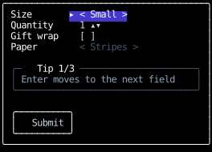
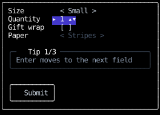
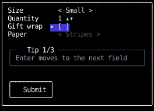
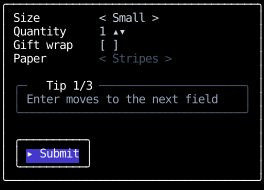
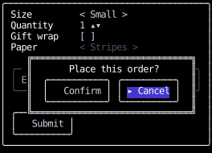
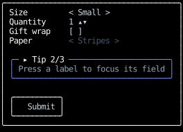

use_focus
Each key press goes to one element: the focused one.
A component becomes focusable by calling use_focus,
and when it's focused, its top-level element, the one it returns,
receives every key press first.
The key then bubbles to that element's ancestors,
until a handler returns something other than None.
When nothing is focused, key presses go to the root component's element alone.
This page covers making components focusable and moving focus between them. How a key press travels once it reaches the focused element is on the Events page.
Making a component focusable
@component
def counter() -> Text:
focus = use_focus(auto_focus=True)
count, set_count = use_state(0)
def on_input(event: InputEvent, _: Receiver) -> InputResponse:
match event:
case KeyPressed(key=Key.Up):
set_count(lambda count: count + 1)
return ()
case _:
return None
return Text(
content=str(count),
style=text_bg("indigo", 700) if focus.is_focused else default,
on_input=on_input,
)
focus.is_focused says whether the component is focused,
so it can draw a focus ring, and auto_focus=True focuses it when it mounts while nothing else is focused.
Put a focusable component's key handler on the element it returns.
Elements inside that one never receive key presses,
since they're descendants of the focused element rather than ancestors.
For the same reason, a component deep in the tree can't own a global shortcut:
a help overlay toggled with ? puts that binding on the root component's element,
or on an ancestor of whatever is focused, which every key press bubbles through
unless a handler below it stops it.
An example
This order form uses every way focus moves. Its fields take keys rather than text: the size and the wrapping paper cycle with Left and Right, the quantity steps with Up and Down, and gift wrap toggles with Space.
SIZES = ("Small", "Medium", "Large")
PAPERS = ("Stripes", "Dots", "Plain")
TIPS = ("Enter moves to the next field", "Press a label to focus its field", "Tab stays inside the dialog")
def marked(focus: Focus, content: str) -> str:
return f"{'▸' if focus.is_focused else ' '} {content}"
def field_style(focus: Focus, is_focusable: bool = True) -> Style:
if not is_focusable:
return text_color("slate", 600)
return text_bg("indigo", 700) | text_color("slate", 50) if focus.is_focused else text_color("slate", 300)
@component
def choice_field(
options: tuple[str, ...], handle: FocusHandle, auto_focus: bool = False, is_focusable: bool = True
) -> Text:
focus = use_focus(auto_focus=auto_focus, handle=handle, is_focusable=is_focusable)
index, set_index = use_state(0)
def on_input(event: InputEvent, _: Receiver) -> InputResponse:
match event:
case KeyPressed(key=Key.Left):
set_index(lambda i: (i - 1) % len(options))
return ()
case KeyPressed(key=Key.Right):
set_index(lambda i: (i + 1) % len(options))
return ()
case _:
return None
return Text(
content=marked(focus, f"< {options[index]} >"),
style=field_style(focus, is_focusable),
on_input=first(on_input, focus_receiver_on_press),
)
@component
def quantity_field(handle: FocusHandle) -> Text:
focus = use_focus(handle=handle)
quantity, set_quantity = use_state(1)
def on_input(event: InputEvent, _: Receiver) -> InputResponse:
match event:
case KeyPressed(key=Key.Up):
set_quantity(lambda q: q + 1)
return ()
case KeyPressed(key=Key.Down):
set_quantity(lambda q: max(q - 1, 1))
return ()
case _:
return None
return Text(
content=marked(focus, f"{quantity} ▴▾"),
style=field_style(focus),
on_input=first(on_input, focus_receiver_on_press),
)
@component
def toggle_field(is_on: bool, set_on: Setter[bool], handle: FocusHandle) -> Text:
focus = use_focus(handle=handle)
def on_input(event: InputEvent, _: Receiver) -> InputResponse:
match event:
case KeyPressed(key=Key.Space):
set_on(toggle)
return ()
case _:
return None
return Text(
content=marked(focus, "[x]" if is_on else "[ ]"),
style=field_style(focus),
on_input=first(on_input, focus_receiver_on_press),
)
@component
def help_panel() -> Div:
# A press focuses it, but Enter and Tab never stop on it.
focus = use_focus(in_focus_order=False)
page, set_page = use_state(0)
def on_input(event: InputEvent, _: Receiver) -> InputResponse:
match event:
case KeyPressed(key=Key.Left):
set_page(lambda p: (p - 1) % len(TIPS))
return ()
case KeyPressed(key=Key.Right):
set_page(lambda p: (p + 1) % len(TIPS))
return ()
case _:
return None
return Div(
style=border
| border_lightrounded
| pad_x(1)
| (border_color("indigo", 400) if focus.is_focused else border_color("slate", 600)),
on_input=first(on_input, focus_receiver_on_press),
children=(
Text(
style=position_absolute | inset_left(1) | inset_top(-1) | clip_to_border,
content=f" {marked(focus, f'Tip {page + 1}/{len(TIPS)}')} ",
),
Text(content=TIPS[page], style=text_color("slate", 400)),
),
)
@component
def button(
label: str, action: Callable[[], InputResponse], auto_focus: bool = False, handle: FocusHandle | None = None
) -> Text:
focus = use_focus(auto_focus=auto_focus, handle=handle)
def on_input(event: InputEvent, _: Receiver) -> InputResponse:
match event:
case KeyPressed(key=Key.Enter):
return action()
case _:
return None
return Text(
content=marked(focus, label),
style=pad_x(1) | border | border_lightrounded | field_style(focus),
on_input=first(on_input, each(on_click(action), focus_receiver_on_press)),
)
dialog_box = position_absolute | inset(0) | margin_auto | fit_content_width | fit_content_height
@component
def confirmation(close: Callable[[], None], return_to: FocusHandle) -> Div:
def close_and_return() -> InputResponse:
close()
return FocusOn(return_to)
return Div(
style=dialog_box | col | align_children_center | border | border_double | pad_x(2),
# Tab from either button reaches this element before the form's, and cycles between the two.
on_input=tab_focus,
children=(
Text(content="Place this order?"),
Div(
style=row | gap(1),
children=(
button("Confirm", close_and_return),
button("Cancel", close_and_return, auto_focus=True),
),
),
),
)
@component
def labelled(label: str, handle: FocusHandle, field: Component) -> Div:
return Div(
style=row | gap(1),
children=(Text(content=f"{label:<10}", on_input=focus_on_press(handle)), field),
)
@component
def order_form() -> Div:
size, _ = use_state(FocusHandle)
quantity, _ = use_state(FocusHandle)
gift_wrap, _ = use_state(FocusHandle)
paper, _ = use_state(FocusHandle)
submit, _ = use_state(FocusHandle)
is_wrapped, set_wrapped = use_state(False)
is_confirming, set_confirming = use_state(False)
def on_input(event: InputEvent, receiver: Receiver) -> InputResponse:
match event:
case KeyPressed(key=Key.Enter):
return FocusNext(within=receiver.subtree)
case _:
return None
def open_confirmation() -> InputResponse:
set_confirming(True)
# With nothing focused, the dialog's Cancel button takes focus as it mounts.
return ClearFocus()
return Div(
style=col | gap(1) | border | border_lightrounded | pad_x(1),
on_input=first(on_input, tab_focus),
children=(
Div(
style=col,
children=(
labelled("Size", size, choice_field(SIZES, size, auto_focus=True)),
labelled("Quantity", quantity, quantity_field(quantity)),
labelled("Gift wrap", gift_wrap, toggle_field(is_wrapped, set_wrapped, gift_wrap)),
labelled("Paper", paper, choice_field(PAPERS, paper, is_focusable=is_wrapped)),
),
),
help_panel(),
Div(style=row, children=(button("Submit", open_confirmation, handle=submit),)),
*([confirmation(close=lambda: set_confirming(False), return_to=submit)] if is_confirming else []),
),
)
The first field takes focus at startup, with auto_focus=True:

╭──────────────────────────────────────╮
│ Size ▸ < Small > │
│ Quantity 1 ▴▾ │
│ Gift wrap [ ] │
│ Paper < Stripes > │
│ │
│ ╭─ Tip 1/3 ──────────────────────╮ │
│ │ Enter moves to the next field │ │
│ ╰──────────────────────────────────╯ │
│ │
│ ╭──────────╮ │
│ │ Submit │ │
│ ╰──────────╯ │
╰──────────────────────────────────────╯
Enter moves to the next field.
No field handles Enter, so it bubbles to the form's element,
whose handler returns FocusNext(within=receiver.subtree):

╭──────────────────────────────────────╮
│ Size < Small > │
│ Quantity ▸ 1 ▴▾ │
│ Gift wrap [ ] │
│ Paper < Stripes > │
│ │
│ ╭─ Tip 1/3 ──────────────────────╮ │
│ │ Enter moves to the next field │ │
│ ╰──────────────────────────────────╯ │
│ │
│ ╭──────────╮ │
│ │ Submit │ │
│ ╰──────────╯ │
╰──────────────────────────────────────╯
Each label focuses its field with focus_on_press,
and a focus handle the form keeps in use_state(FocusHandle) and passes to both:

╭──────────────────────────────────────╮
│ Size < Small > │
│ Quantity 1 ▴▾ │
│ Gift wrap ▸ [ ] │
│ Paper < Stripes > │
│ │
│ ╭─ Tip 1/3 ──────────────────────╮ │
│ │ Enter moves to the next field │ │
│ ╰──────────────────────────────────╯ │
│ │
│ ╭──────────╮ │
│ │ Submit │ │
│ ╰──────────╯ │
╰──────────────────────────────────────╯
With gift wrap off, the wrapping paper field passes is_focusable=False, so Enter skips it,
and the help panel passes in_focus_order=False, so Enter skips that too, and lands on the submit button:

╭──────────────────────────────────────╮
│ Size < Small > │
│ Quantity 1 ▴▾ │
│ Gift wrap [ ] │
│ Paper < Stripes > │
│ │
│ ╭─ Tip 1/3 ──────────────────────╮ │
│ │ Enter moves to the next field │ │
│ ╰──────────────────────────────────╯ │
│ │
│ ╭──────────╮ │
│ │ ▸ Submit │ │
│ ╰──────────╯ │
╰──────────────────────────────────────╯
The submit button handles Enter itself, so the form never sees it.
It opens a confirmation dialog and returns ClearFocus(),
so the dialog's Cancel button, which passes auto_focus=True, takes focus as it mounts:

╭──────────────────────────────────────╮
│ Size < Small > │
│ Quantity 1 ▴▾ │
│ Gift wrap [ ] │
│ Paper < Stripes > │
│ ╔══════════════════════════════╗ │
│ ╭─ ║ Place this order? ║╮ │
│ │ E║ ╭───────────╮ ╭──────────╮ ║│ │
│ ╰──║ │ Confirm │ │ ▸ Cancel │ ║╯ │
│ ║ ╰───────────╯ ╰──────────╯ ║ │
│ ╭──╚══════════════════════════════╝ │
│ │ Submit │ │
│ ╰──────────╯ │
╰──────────────────────────────────────╯
The dialog's element has tab_focus, so Tab from either of its buttons moves only between them:
two presses of Tab wrap back to Cancel.

╭──────────────────────────────────────╮
│ Size < Small > │
│ Quantity 1 ▴▾ │
│ Gift wrap [ ] │
│ Paper < Stripes > │
│ ╔══════════════════════════════╗ │
│ ╭─ ║ Place this order? ║╮ │
│ │ E║ ╭───────────╮ ╭──────────╮ ║│ │
│ ╰──║ │ Confirm │ │ ▸ Cancel │ ║╯ │
│ ║ ╰───────────╯ ╰──────────╯ ║ │
│ ╭──╚══════════════════════════════╝ │
│ │ Submit │ │
│ ╰──────────╯ │
╰──────────────────────────────────────╯
Enter on Cancel closes the dialog and returns FocusOn with the submit button's focus handle,
which the form passes to both the button and the dialog:

╭──────────────────────────────────────╮
│ Size < Small > │
│ Quantity 1 ▴▾ │
│ Gift wrap [ ] │
│ Paper < Stripes > │
│ │
│ ╭─ Tip 1/3 ──────────────────────╮ │
│ │ Enter moves to the next field │ │
│ ╰──────────────────────────────────╯ │
│ │
│ ╭──────────╮ │
│ │ ▸ Submit │ │
│ ╰──────────╯ │
╰──────────────────────────────────────╯
A press on the help panel focuses it, through focus_receiver_on_press,
though Enter and Tab never stop on it, and Right then shows its next tip:

╭──────────────────────────────────────╮
│ Size < Small > │
│ Quantity 1 ▴▾ │
│ Gift wrap [ ] │
│ Paper < Stripes > │
│ │
│ ╭─ ▸ Tip 2/3 ──────────────────────╮ │
│ │ Press a label to focus its field │ │
│ ╰──────────────────────────────────╯ │
│ │
│ ╭──────────╮ │
│ │ Submit │ │
│ ╰──────────╯ │
╰──────────────────────────────────────╯
The whole walk through the form, from Enter on the first field to the help panel's next tip:
Moving focus
Focus moves only through controls, auto_focus,
and the focused component going away.
No key or press does anything to focus unless a handler on its path returns a control that does:
FocusNextandFocusPreviousmove to the next or previous component in the focus order, which is tree order, wrapping at the ends.FocusOnfocuses the component with a given focus handle, including one that mounts in the render its handler causes.ClearFocusclears focus, so key presses go to the root component's element.
The library handlers return these for the common bindings:
tab_focus for Tab and Shift+Tab, focus_receiver_on_press and focus_on_press for a press,
and clear_focus for a press that should blur.
An app without tab_focus on some element has no Tab navigation,
and a focusable component without focus_receiver_on_press doesn't take focus when it's clicked.
An app that wants Escape to clear focus binds it to ClearFocus() on its root.
Focus also changes when a render leaves the focused component unable to keep it.
Unmounting it, hiding it, or making it unfocusable clears focus,
rather than moving it to whichever component took the departed one's place.
A component that mounts with auto_focus=True in the same render can then take focus.
Wherever focus moves, the newly focused component's element is scrolled into view in any scroll container it's in, by as little as it takes, as browsers do.
Focusing a component you render
A FocusHandle names a focusable component for FocusOn.
use_focus creates one on the component's first render and keeps it,
but a parent that needs to focus a child it renders creates the handle itself, before the child mounts,
and passes it down:
@component
def labelled_input(label: str) -> Div:
input_handle, _ = use_state(FocusHandle)
value, set_value = use_state("")
return Div(
children=(
Text(content=label, on_input=focus_on_press(input_handle)),
text_input(value, set_value, handle=input_handle),
),
)
A child that can be focused from outside takes a handle: FocusHandle | None = None parameter
and passes it on to use_focus, as text_input
and the headless components do.
Keep the handle in use_state: one built with FocusHandle() on every render
makes use_focus raise ChangedFocusHandle on the second.
Two mounted components given the same handle raise DuplicateFocusHandle.
The handle never changes while the component is mounted, so it's safe in an effect's deps.
Focusing a component as it mounts
A handler that adds a component can focus it too:
it creates the new component's handle, keeps it in state with whatever else describes the component,
and returns FocusOn with it:
@component
def notes() -> Div:
handles, set_handles = use_state(tuple[FocusHandle, ...]())
def on_input(event: InputEvent, _: Receiver) -> InputResponse:
match event:
case KeyPressed(key=Key.ControlN):
handle = FocusHandle()
set_handles(lambda handles: (*handles, handle))
return FocusOn(handle)
case _:
return None
return Div(on_input=on_input, children=tuple(note(handle) for handle in handles))
The note doesn't exist until the next render, so FocusOn waits for it:
a FocusOn whose handle names no component that can take focus yet
focuses that component in the next render, before the frame is drawn,
so the new note is focused in the first frame that shows it.
It's how a browser's <dialog> focuses a field inside it as showModal() opens it.
A control that moves focus after it, in the same handler or a later one before that render, wins,
and a FocusOn whose component doesn't take focus in that render does nothing.
Moving focus within part of the tree
FocusNext and FocusPrevious take within, a Subtree
that limits them to the focusable components inside one element, including the element itself.
A handler gets its own element's from its receiver, as receiver.subtree.
From focus outside the subtree, they go to its first or last focusable component.
tab_focus passes its receiver's subtree,
so on the root component's element it moves through the whole tree,
and on a dialog's element, which Tab from a field inside the dialog bubbles to first,
it keeps Tab inside the dialog.
A form that moves to its next field on Enter does the same thing for Enter,
from its own element's handler.
A dialog traps Tab and nothing else.
A press beside it still reaches whatever is drawn there,
and if focus clears while the dialog is open, because its focused field unmounted,
key presses go to the root, whose tab_focus can move focus out of the dialog.
Taking a component out of focus
Two parameters take a mounted, visible component partly or wholly out of focus, each like a browser attribute:
is_focusable=Falsemakes it unfocusable, likedisabled, for a field that's disabled until another is filled in. Nothing can focus it, and if it's focused, focus clears. It still receives the mouse events routed to it, so a press on it is still claimed by itsfocus_receiver_on_press, which then does nothing.in_focus_order=Falsetakes it out of the focus order only, liketabindex="-1", for a component that should take focus when it's pressed or named, but isn't a Tab stop.FocusNextandFocusPreviousskip it, whileFocusOn,auto_focusand a press still focus it, and it keeps focus once it has it. From it,FocusNextandFocusPreviousmove to its neighbors in tree order.
Either way the component keeps its focus handle and its place in tree order,
so it's back in the focus order where it was when the parameter flips back,
though making a component focusable again doesn't focus it.
They're parameters, rather than a use_focus call to skip,
because a component can't call a hook conditionally.
When focus changes
Every key press in a batch of input is routed with the focus as it is when it arrives,
so a Tab followed by a letter delivers the letter to the newly focused component.
A key press that mounts an auto_focus component, or that mounts one and returns FocusOn for it,
doesn't send the next key press in its batch there,
since the component doesn't exist until the next render.
A control that moves focus re-renders the components that gained and lost focus, as a state change would,
so is_focused is current on the next frame.
When a render moves focus itself, to an auto_focus component that mounted or to the component a FocusOn waited for,
or away from a focused component that unmounted, hid, or became unfocusable,
the components that gained and lost focus re-render before the frame is drawn,
so an auto_focus component is focused in the first frame that shows it.
An auto_focus component that hides itself because it gained focus would move focus again,
so it raises UnsettledFocus instead, and so does one that a waiting FocusOn focuses.
One that a control focuses and that hides itself because it gained focus loses focus in the same render,
like any focused component that hides, and is drawn unfocused.
API
use_focus(
auto_focus: bool = False,
handle: FocusHandle | None = None,
is_focusable: bool = True,
in_focus_order: bool = True,
) -> Focus
Makes the calling component focusable. Its top-level element, the one it returns, is the one that's focused, so a component that handles key presses puts its handler on that element. A component can call it only once.
| PARAMETER | DESCRIPTION |
|---|---|
auto_focus
|
Whether the component takes focus when it mounts visible and focusable while nothing is focused,
or inside the focused component while that one is out of the focus order,
as an element with
TYPE:
|
handle
|
The handle that names the component, which a parent creates with
TYPE:
|
is_focusable
|
Whether the component can be focused, like a browser's
TYPE:
|
in_focus_order
|
Whether
TYPE:
|
| RETURNS | DESCRIPTION |
|---|---|
Focus
|
Whether the component is focused, and its handle, which is the same object on every render. |
dataclass
Focus(is_focused: bool, handle: FocusHandle)
What use_focus returns to the calling component.
instance-attribute
is_focused: bool
Whether the calling component is focused, so it receives key presses, as of this render.
instance-attribute
handle: FocusHandle
The handle that names the calling component, for FocusOn.
dataclass
An opaque token that names one focusable component, for FocusOn.
It's an identity token, equal only to itself, so it can exist before the component it names has mounted:
a parent creates one with use_state(FocusHandle) and passes it to the child's
use_focus.
__repr__() -> str
Names the handle by its identity, since that's all that tells two handles apart.
dataclass
An opaque name for an element and its descendants,
which FocusNext and FocusPrevious
take to move focus only among the focusable components inside it.
ScrollTo, ScrollBy,
ScrollIntoView,
page_down and page_up
take one in place of an ElementHandle, to name the element itself,
so a handler can scroll its own element without a handle.
A handler gets its own element's from its Receiver.
Subtree() names nothing mounted, as a fresh FocusHandle does until a component takes it,
so a test can build a Receiver to call a handler with directly;
a control naming it moves nothing.
Raised when a component calls use_focus more than once, since every call would name the same node.
Raised when a component passes use_focus a different handle from the one its first run passed,
usually because its parent builds a new FocusHandle() on every render rather than keeping one in use_state.
Raised when two mounted components are given the same FocusHandle, which leaves it naming neither.
Raised when re-rendering the components whose focus a render changed changes focus again, which only a component that hides itself because it gained focus can cause: one that lost focus already rendered unfocused if it became unfocusable, and draws nothing if it's hidden.